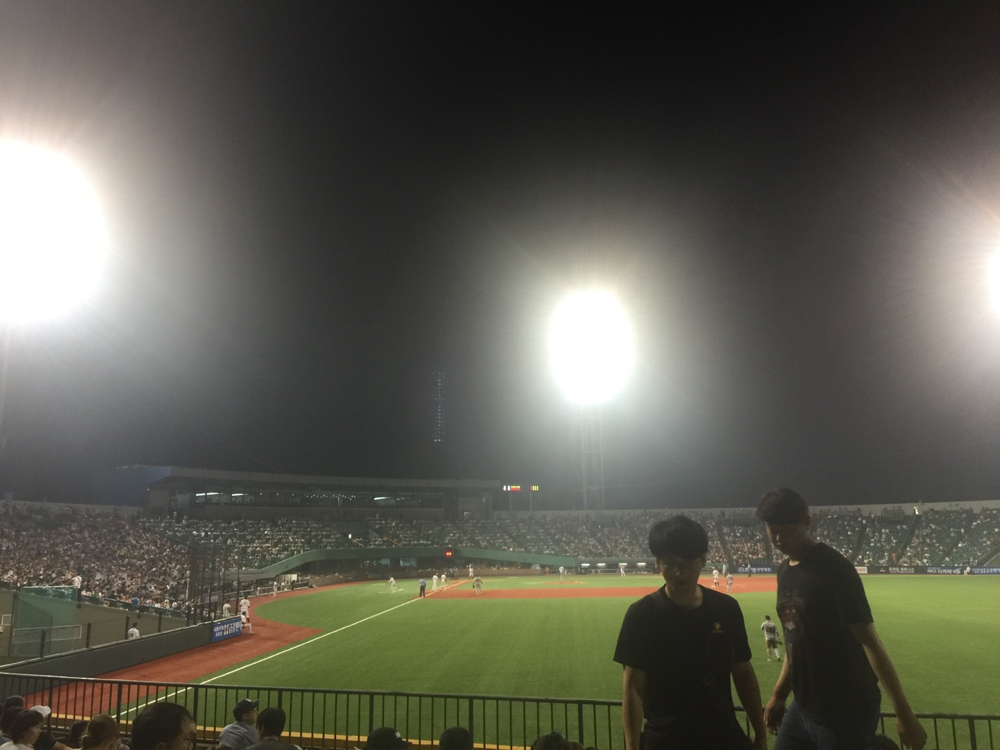

내가 야구를 좋아하게된 계기를 물어본다면 8할이 우리 아빠의 영향이지 않을까? 어렸을 때는 아빠가 식사시간마다 야구를 보면서 웃는 것이 이해되지 않았다. (사실 이런 게임을 보면서 웃는 것도 힘들 것 같긴하다만은,,,) 심지어 나는 그냥 채널을 돌려버리기도 했다. 아빠와 엄마 나 모두 부산이 고향이고, 사직구장 (롯데의 홈구장) 가까이에 살았지만, 직관을 가지 않았던 것도 이런 이유에서 였다.
하지만, 중학교에 들어가고 우연히 아빠와 함께 티비를 통해 보게 된 야구는 굉장히 인상 깊었다. 어떤 사람들은 작은 공 하나를 가지고, 심지어 주렁주렁 장비와 도구를 가지고하는 비효율적인 스포츠라고들 하지만, 나에겐 작은 공을 하나 던지겠다고, 치겠다고, 잡겠다고 최선을 다하는 사람들의 모습이 멋져보였다. 심지어 점수가 나는 과정이 '한 순간!'이라고 하기 보다는 단계를 밟는 느낌이어서 흥미진진하기도 했다. 그렇게 야구를 챙겨보게 되었다.
TEAM FIRST, FAN FIRST?
팬이 우선인데 왜 이기질 못하니...
이제와서 이때를 추억해본다면, 처음 직접 간 야구장이 얼마나 설렜을까 싶다. 날은 덥고, 날벌레도 많았지만, "내가 티비로만 보던 선수들이 뛰는 장면을 두 눈으로 직접 본다니!" 그러나 결과는 당연하게도(?) 패배였다. 이 때 패배의 쓴 맛을 보고 야구를 끊었다면 무언가 달라졌을까...
혹시 배경의 차이를 느낀 사람이 있을까? 있다면 눈썰미 인정! 여기는 사직구장이 아니라 울산의 문수구장이다. 이곳도 롯데가 제2구장으로 사용하는 야구장이다. 이 곳에서는 경기가 잘 열리지 않기 때문에 울산으로 이사 온 이후에는 직관 일정을 맞추기가 힘들어졌다.